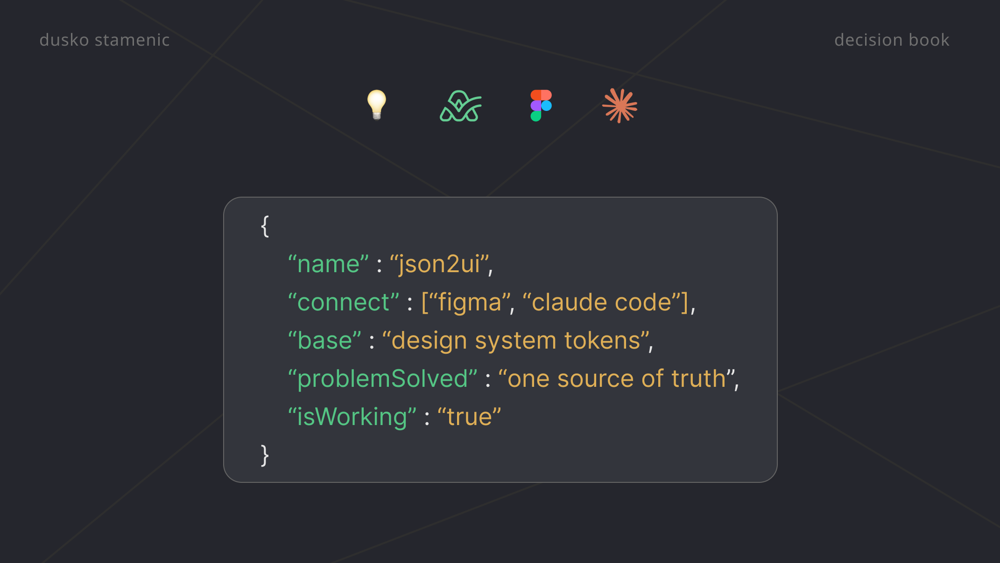

Decision Book
Long case studies often hide the "why." My decision book keeps it clear: concise rationale and real design decisions, shaped by 7+ years on a leading project management app.
5 categories
productivity
not the what

A JSON schema, a Figma plugin, and a Claude skill become one source of truth for design tokens — and why page three is where judgment starts.

How to move from "it feels faster" to adoption rates, handoff times, and satisfaction scores — metrics any design team can track.

Designing an executive churn dashboard — a four-layer narrative that moves leadership from problem to decision.

A short note on how integrating AI into the design process changed not just the output — but the way the decision itself was made.

Starting from the question — not the chart. How hierarchy, grouping, and restraint decide whether a dashboard is useful.

A small pattern, hiding in plain sight for years — and what it taught me about paying attention to the things users already do.

Rebuilding the humble select from first principles — states, edge cases, and the compromises you only see once you ship it.

Building CaptionCraft AI in two minutes — a small helper that turns any uploaded image into a clean, objective alt text.

Designing a Calendar for both web and mobile — what graceful degradation looks like when the screen shrinks but the intent shouldn't.

Building a typographic system from the ground up — relative units, tokens, scale, and the quiet levers of weight and color that guide the reader's eye.

Building a palette that survives dark mode, brand drift, and three product teams — without collapsing into a pile of hex codes.

A small visual study — the kind of side piece that exists mostly to remind you why the craft matters in the first place.

A name is the first structural decision. What happens when you treat it as rigorously as the components themselves.

Designing the User Card — a study in progressive enhancement, where each new layer has to justify its place before the interface earns it.

A solo side project on ActiveCollab's Projects page — how smaller type, lighter icons, and tighter chrome gave the content room to breathe.

What to write, what to skip, and why docs are a product surface of their own — read far more often than any dashboard.

On the double diamond — what it quietly gets right, what teams routinely skip, and how to keep the discovery half honest.

A small framework for asking, a month after launch, whether the thing you shipped actually moved the needle you chose.

Prototyping a local gig feed with Firebase Studio — and what Facebook's locked-down data taught me about the limits of AI-assisted building.

On responsive layout decisions, fluid tokens, and the quiet choreography that makes an interface feel native at every width.

A living toolkit — the handful of books, plugins, and models I keep returning to when the work actually has to ship.

Competitive research as a rhythm, not a one-off — and why the real insight rarely comes from the first teardown.

When accessibility stops being a checklist and starts being a constraint that improves every other decision in the system.
More than essays. A way of thinking.
If the decision-making behind these essays resonates, there's more where that came from — in the full portfolio.
View full portfolio →